GESTAL
La Gestalt es una corriente decisiva de la
psicología moderna. Surgió en Alemania a
principios del siglo XX. Sus exponentes
más reconocidos fueron los teóricos Max
Wertheimer, Wolfgang Köhler, Kurt
Koffka y Kurt Lewin.
El término Gestalt proviene del alemán, fue introducido por primera vez por
Christian von Ehrenfels y puede traducirse, aquí, como "forma", “totalidad”, "figura",
"configuración" , "estructura”, “unidad organizada“.
Según la Teoría de la Gestalt, la mente configura, a través de ciertos principios los elementos que llegan a ella a través de los canales sensoriales (percepción) o de la memoria (pensamiento, inteligencia y resolución de problemas) en la experiencia que tiene el individuo en su interacción con el medio ambiente.
LEYES DE LA GESTAL
Ley de Figura- Fondo:
Da cuenta de que no podemos percibir una misma forma como figura y a la vez como fondo de esa figura. El fondo es todo lo que no se percibe como figura y al revés. La figura es dónde ponemos la vista y fijamos la atención.
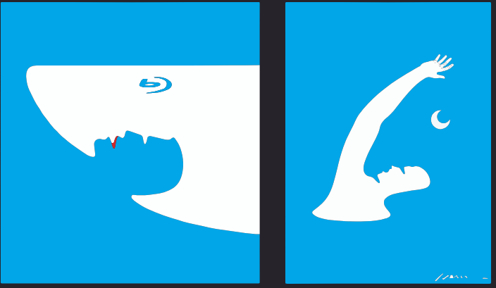
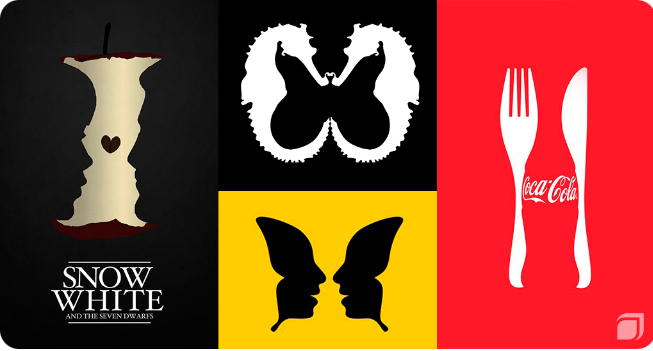
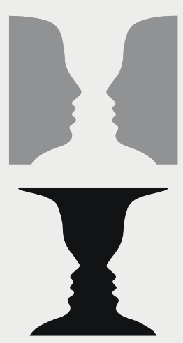
Ley de Igualdad o Equivalencia:
Da cuenta de que cuando concurren varios elementos de diferentes clases, hay una tendencia a constituir grupos con los que son iguales. Si las desigualdades se basan en el color, el efecto es más sorprendente que en la forma.
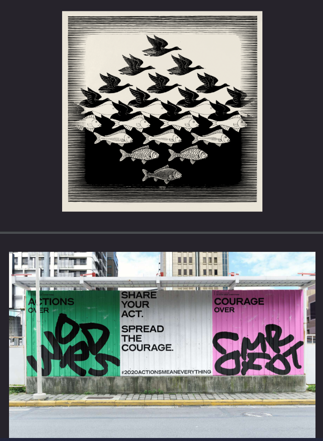
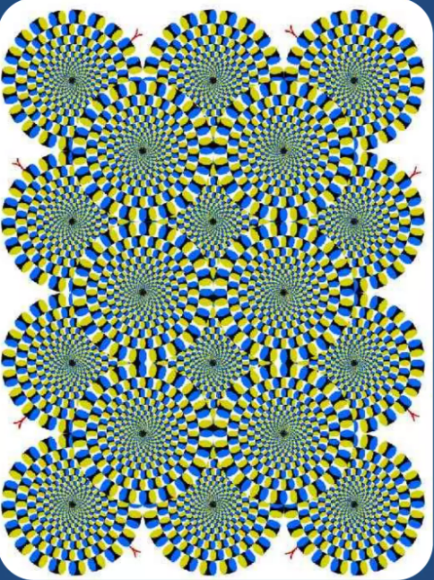
Ley de Cierre:
Da cuenta de que una forma es mejor percibida cuanto más cerrada sea. Si un contorno no está completamente cerrado, la mente tiende a cerrarlo.
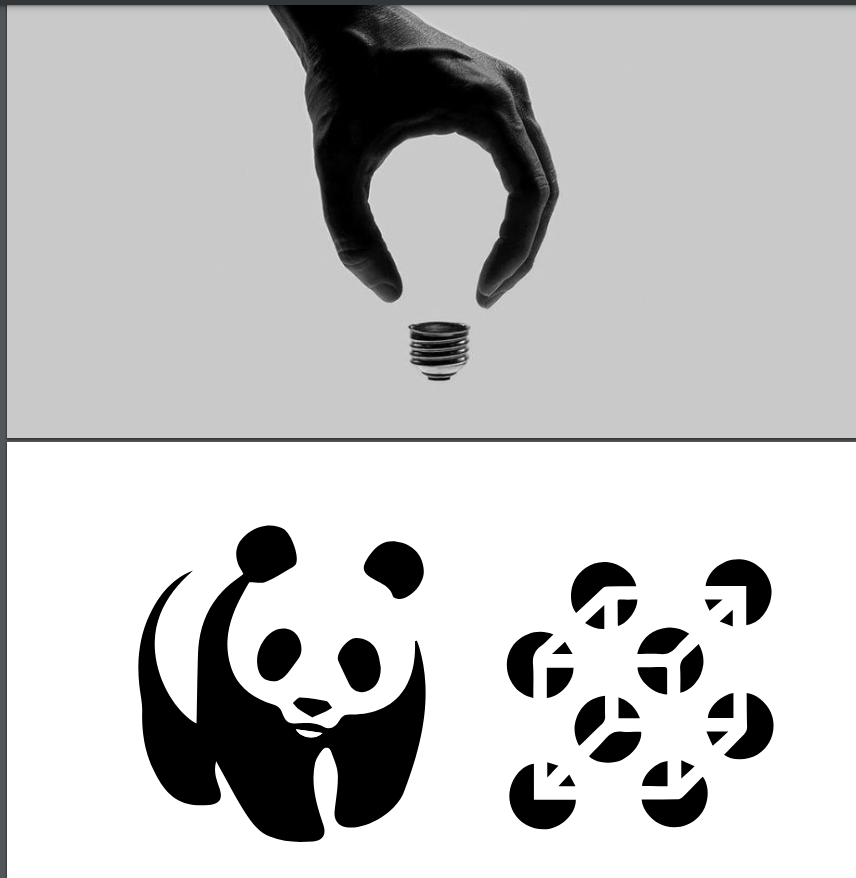
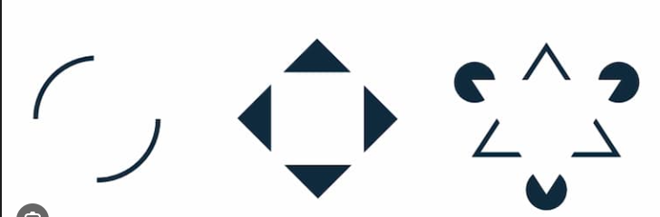
Ley de la Experiencia:
Da cuenta de que las experiencias que tenemos a lo largo de nuestra vida condicionan nuestras percepciones.
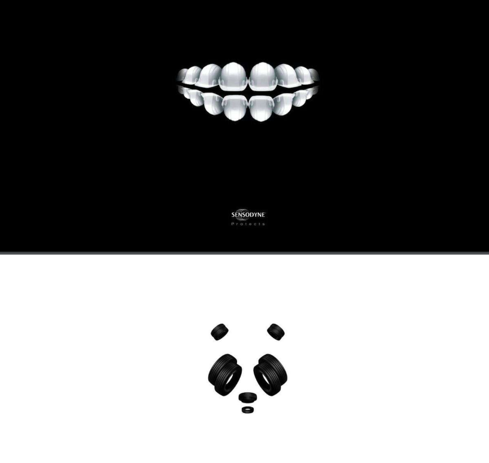
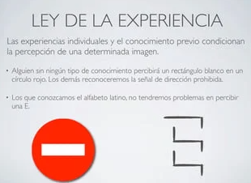
Ley de la Semejanza:
Da cuenta de que los elementos aislados pero similares son percibidos como parte del mismo grupo. Su semejanza puede deberse a tener un color parecido, a su forma o a cualquier característica que nos permita establecer una relación entre ellas
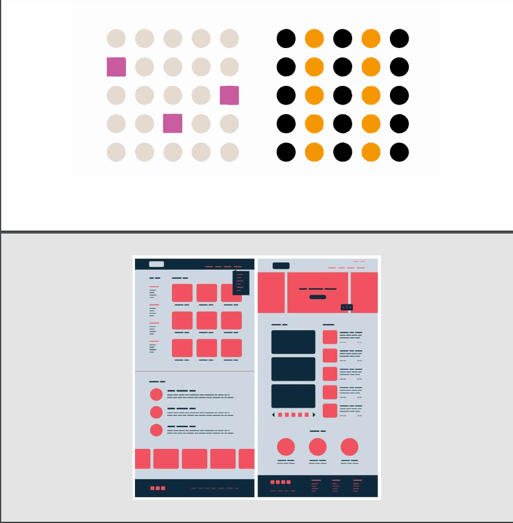
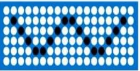
Ley de la Proximidad:
Da cuenta de que los elementos aislados pero con cierta cercanía tienden a ser considerados como grupos.
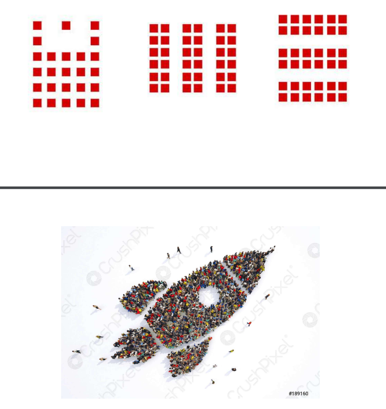
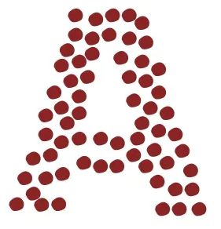
Ley de la Simetría:
Da cuenta de que las imágenes simétricas son percibidas por nuestro cerebro como iguales, como un solo elemento, en la distancia.
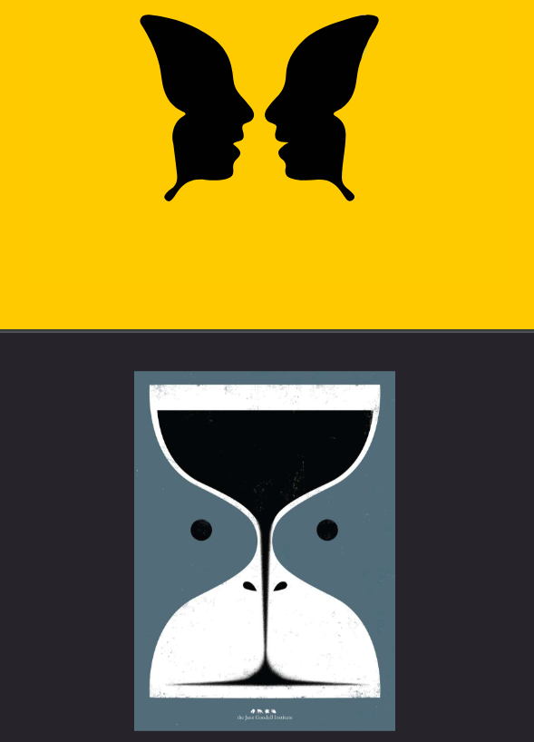
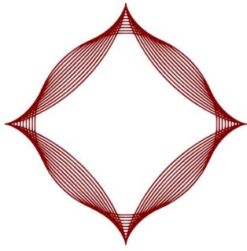
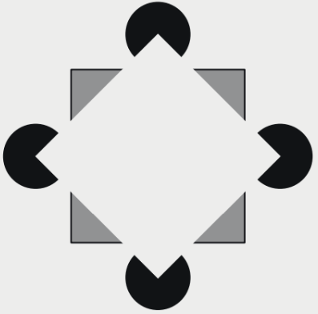
Ley de la Continuidad:
Da cuenta de que varios elementos colocados formando un flujo orientado hacia alguna parte se percibirán como un todo. Una forma es mejor percibida cuanto más continua sea. Si el patrón se rompe, la mente tiende a continuarlo.
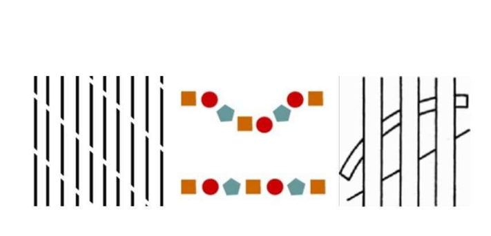
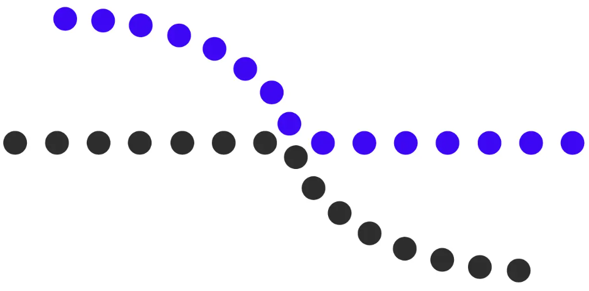
Ley de la Dirección Común:
Da cuenta de que varios elementos aislados pero con movimiento común tienden a ser considerados como grupos.
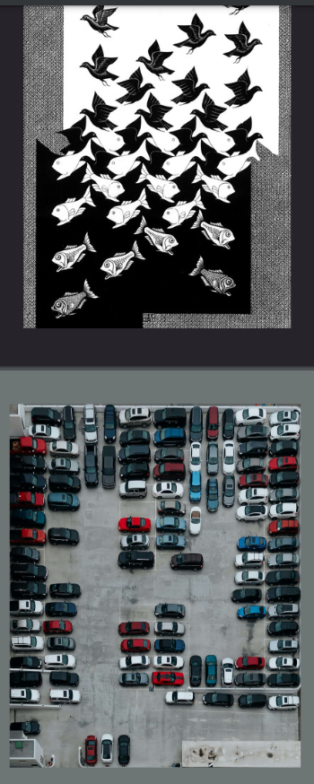
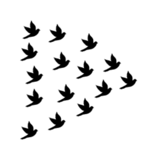
Ley de la Buena Forma:
La percepción tiende a organizar los elementos de la forma más sencilla y rápida posible. Por lo tanto, simplificamos lo que percibimos y preferimos lo simple. O sea que lo que percibimos con mayor exactitud y rapidez son las formas más completas, más simples o simétricas
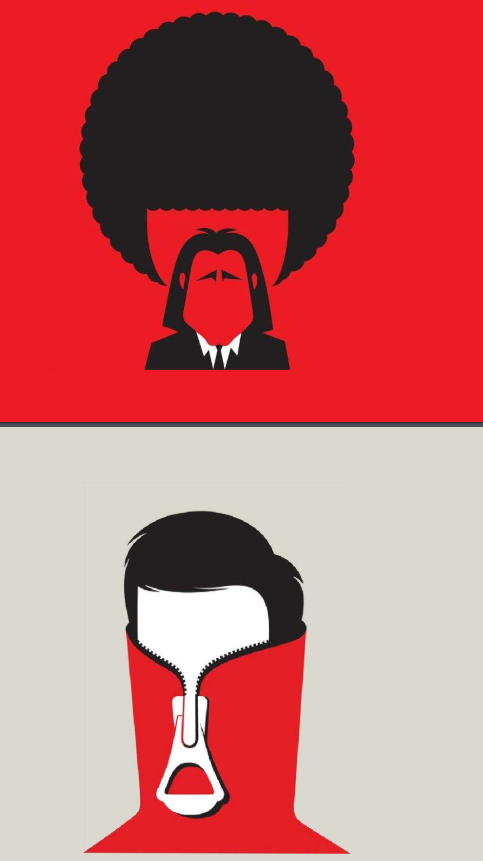
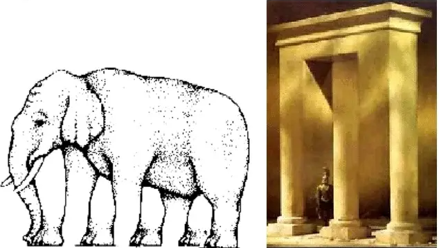
Ley de la Simplicidad:
La ley de la simplicidad indica que nuestra mente percibe todo en su forma más simple, aún cuando la forma es compleja o imposible, nuestro cerebro la construye rápidamente.
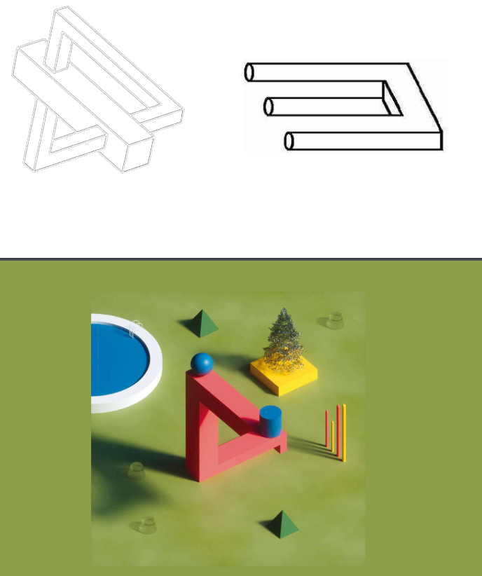
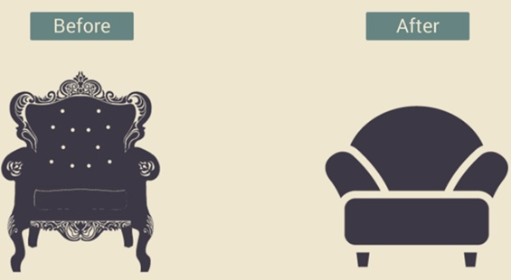
Encontrar leyes de la gestal
link
RTA:Ley de simplicidad: las opciones de comprar son muy facil de entender ,a la hora de hacer click a la opcion deseada ,el contenedor tiene un margen de color azul y tiene una tilde con fondo azul en donde habia un circulo vacio.
Ley de continuidad: En el header donde dice product,soluctions,Why WP Engine ,wordPress Hosting,resources al lado tiene un icono que es una flecha hacia abajo que me da a entender que hay mas informacion.Tambien en el menu de comprar los contenedores tiene un patron que es un circulo vacio
seguido del nombre,deja un espacio y dice lo que contiene esa opcion y despues deja otro espacio y dice el precio de la opcion.
continuando un patron de boton + mas flecha hacia abajo + informacion.
Ley de la buena forma: en el menu de opcion para comprar cada opcion es un contenedor que es simetrico ocupando el mismo alto ,ancho y estructura lo que lo hace simple y facil de entender.
Ley de proximidad:las imagenes estan cerca una de otras,lo que considero como un grupo,lo mismo pasa con el menu de comprar cada menu es un contenedor que estan cerca de otros contenedores y tambien
con el header los botones estan cerca de los otros botones por lo que forma un grupo.
link


RTA:Ley de proximidad:Los botones del header estan cerca uno de los otros dejando un espacio por lo que se consideran como un grupo.
Ley de la experiencia: En el contenedor que esta la bandera de españa,seguido que dice Spanish al final se muestra una flecha hacia abajo que por la experiencia
que tengo de ver otras pag en la vida cotidiana me indica que se le puede cambiar el idioma a la pagina.
Ley de la buena forma: los campos de completar la informacion estan centrados divididos en 2 columnas ,tiene el mismo largo,ancho diciendo que es lo que hay que completar
lo que lo hace simple y facil de entender ademas de estar simetrico.
link


RTA:Ley de proximidad: Los botones del header estan cerca uno de los otros dejando un espacio por lo que se consideran como un grupo.Tambien abajo donde se encuentran 3 columnas
que cada columna tiene 3 contenedores rectangular con el titulo Diseño de sitio web,etc debido a que estan cercas una de otras.
Ley de continuidad: En la parte que hay un icono y con un subtitulo como Calidad y resultado,Asesoramiento profesional,comunicacion estrategica que contiene informacion, se encuentra una flecha en la
izquierda y otra a la derecha lo cual me indica que hay mas iconos con subtitulos e informacion.
Ley de semejanza: abajo donde se encuentran 3 columna que cada columna tiene 3 contenedores rectangular con el titulo Diseño de sitio web,etc algunas tiene el donde blanco y otras el fondo es el de la pagina
por lo que hay diferencia unas de otras por los que tiene el fondo blanco se perciben como un grupo y las fondo es el de la pagina como otro grupo.
link

RTA:ley de proximidad los circulos estan cercas de otros.
Ley de semejanza:algunos circulos son del mismo color por que se perciben en distintos grupos.
link


Ley de continuidad:en el header aparece una linea del tiempo pero parece que la linea continua creando un patron del año con distintos titulos.
link


Proximidad: los botones del header esta cerca uno de los otro lo cual se perciben como un grupo de elementos iguales debido a su forma.Tambien la imágenes que están debajo debido a que esta cerca una de las otras.
Experiencia:En los botones del header al lado a la derecha en algunos botones tienen una flecha hacia abajo lo que indica que hay más información y a la derecha hay una barra con una lupa que es para buscar algo en específico ,esto es a la experiencia que obtuve navegando en otros sitios web.
Figura/fondo:El fondo de los botones del header son del mismo color del fondo del sitio web por lo que no se sabe con exactitud cual es la figura del botón.
Corrección: Podría necesitar ajuste. La ley de figura-fondo se basa en la capacidad de distinguir claramente los elementos importantes (figura) del fondo. Si los botones no son distinguibles del fondo, esto puede ser un problema de usabilidad, pero en muchos sitios, incluso si el color es similar, hay otros elementos (bordes, sombreados) que ayudan a diferenciar las figuras del fondo.
Continuiadad:Hay un patron en donde se muestra las imágenes ,cada fila tiene 4 imágenes ,debajo de la imagen tiene un titulo seguido de la palabra PRO seguido de un icono(corazón) seguido de un numero y seguido de otro icono(ojo)seguido de un numero.Existe otro que son imágenes que se mueven y tiene otro tamaño de ancho y largo con su titulo.
Simetría:cada imagen ocupa en mismo largo y ancho y dejan el mismo espacio entre si ,lo cual es percibido como igual.
Bien pero puedo agregar : Tu Punto: "Cada imagen ocupa el mismo largo y ancho y deja el mismo espacio entre sí, lo cual es percibido como igual."
Buena forma: Los elementos están organizados de forma simple teniendo simetría y buena composición de jerarquía dejando los elementos separados tanto como el encabezado como el cuerpo de la pagina .
link